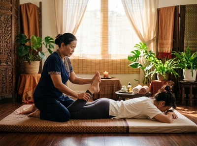

St George's Cross sits at the northern edge of Glasgow's inner city, where the Woodside area meets the busy corridors of St George's Road and New City Road.
It is a neighbourhood in transition: older tenement streets and long-established local businesses sit alongside new residential developments that have drawn a younger, professional crowd to the area. The junction is a real crossroads of Glasgow life, and for anyone searching for thai massage in St George's Cross, Serendipity Massage Therapy & Wellness is within easy reach in the city centre.
St George's Cross is well placed for access to Hope Street, where Serendipity is based in Central Chambers. The area has a large residential population, and many people here commute across the city centre and West End. They arrive home carrying the same physical strain each week: tight shoulders, a stiff neck, and a back that rarely gets a proper rest.
These are exactly the issues that Serendipity's therapist team addresses every day.

The neighbourhood's mix of renters, young professionals, and longer-established residents means there is real variety in what clients from this area come looking for. Some want the deep physical release of a traditional Thai massage after a hard week. Others come for the calm and restoration of an aromatherapy treatment.
Serendipity offers both, along with the full range of massage therapies in between. You can book your session online and choose the treatment that fits what your body needs most right now.
Serendipity offers a full range of therapeutic massage treatments. Each one is delivered by a trained member of the therapist team using techniques developed by head therapist Jariya Malone.
The Glasgow Subway makes the journey from St George's Cross to the city centre simple. From St George's Cross Subway Station, take the inner circle towards Buchanan Street — the journey takes around four to five minutes. From Buchanan Street, it is a short walk along West George Street or St Vincent Street to Hope Street and Central Chambers.
Several bus routes serve St George's Road and New City Road, including the 6, 17, 60, and 61. Services run into the city centre regularly throughout the day.
If you prefer to walk, the route along St George's Road through Charing Cross takes around 20 to 25 minutes and is straightforward.
Serendipity is on the first floor of Central Chambers at 93 Hope Street, Glasgow G2 6LD. The studio is easy to reach whether you are coming in before work, at lunch, or after your day is done.
Serendipity is a professional team practice — not a sole trader and not a chain. Every therapist is trained to a consistent standard in techniques developed by head therapist Jariya Malone, drawing from the traditional Thai massage tradition.
That consistency means you get the same quality of care at every visit, regardless of which therapist you are booked with.
Clients from across Glasgow's inner-city areas, including those in and around St George's Cross, return regularly because the results are real. If you are ready to feel the difference, book a treatment at Serendipity and let the team take it from there.
St George's Cross is a road junction in the Woodside area of Glasgow. It sits where St George's Road, St George's Place, Clarendon Place, and New City Road all meet.
Much of the area was reshaped in the 1960s and 1970s, when motorway work changed the junction's character. Even so, the neighbourhood has kept a strong residential identity.
The name has historical roots — it connects to St George's Church, which gave its name to the surrounding district as Glasgow grew during the industrial era. Interestingly, the heraldic Saint George's Cross, a red cross on a white background, has been linked to the military saint since the Late Middle Ages. You can read more about its history at Saint George's Cross on Wikipedia.
Serendipity Massage Therapy & Wellness is at Central Chambers, 93 Hope Street, Glasgow G2 6LD. That is roughly 1.5 miles from St George's Cross. By subway, it takes around four to five minutes from St George's Cross Station to Buchanan Street, then a short walk to Hope Street. By bus, the journey takes about 10 to 15 minutes, depending on the route and time of day.
The Glasgow Subway is the quickest option. Take the inner circle from St George's Cross Station to Buchanan Street, then walk along West George Street or St Vincent Street to Hope Street. Buses on the 6, 17, 60, and 61 routes also run from St George's Road and New City Road into the city centre. Walking via Charing Cross takes around 20 to 25 minutes.
Same-day availability depends on the current schedule, but Serendipity does offer same-day bookings when spaces are open. The best approach is to check availability online or call 0141 673 6630 to speak with the team directly. Booking ahead is recommended, especially for evenings and weekends.
For people carrying the strain of regular commuting and desk work, Traditional Thai Massage is a strong choice. It uses acupressure and assisted stretching to target deep tension in the neck, shoulders, and back, and helps restore range of motion that builds up from long periods of sitting. Thai Oil Massage is a good option if you prefer a flowing, pressure-based treatment using therapeutic oils. The team at Serendipity can help you find the best fit when you book.
Serendipity Massage Therapy & Wellness is open seven days a week, with morning, afternoon, and evening slots available. For current hours and live availability, visit the online booking page or call 0141 673 6630. The Hope Street location makes it easy to fit a session around a working day, whether you are coming from St George's Cross or elsewhere in Glasgow.